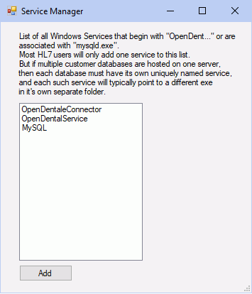

Service Manager
The Service Manager is a tool used to manage the installations of the different services used by Open Dental.
In the Main Menu, click Tools, Misc Tools, Service Manager.
Alternatively, in the Open Dental installation folder, double-click ServiceManager.exe.
By default, all services currently installed will list. Each service must have a unique service name.
The following services can be viewed in the Service Manager:
- OpenDentalService: Required for background processes and is installed with Open Dental. See Open Dental Service.
- eConnector: Required to use eServices. See eConnector.
- OpenDentalHL7: Used by Generic HL7 or eClinicalWorks HL7.
- OpenDentalReplicationService: Required for Replication. See Open Dental Replication Service.
- MySQL: Required to access the database and is installed upon Open Dental installation. Can be either MySQL or MariaDB.
- OpenDentalAPIService: Only used by third-party vendors utilizing the Open Dental API.
Add or Edit a Service
- Run the Service Manager as an administrator.
- If opening the Service Manager from within Open Dental, first run Open Dental as an administrator.
- If opening the Service Manager from the installation folder, right-click to run as an administrator.
- Click Add to install a new service, or double-click to modify an existing service.

- Enter or choose the Service Name.
- The service name must begin with "OpenDent" (e.g. OpenDentalService), with the exception of the MySQL service.
- The service name cannot have spaces.
- Click Browse and select a supported service executable. Typically the files are located in the folders below:
- \Program Files (x86)\Open Dental\OpenDentalService\OpenDentalService.exe
- \Program Files (x86)\Open Dental\OpenDentalEConnector\OpenDentalEConnector.exe
- \Program Files (x86)\Open Dental\OpenDentHL7.exe
- \Program Files (x86)\Open Dental\OpenDentalCustListener\OpenDentalCustListener.exe
- \Program Files (x86)\Open Dental\OpenDentalReplicationService\OpenDentalReplicationService.exe
- Click Install. If the installation is successful the status will change from Not installed to Installed, Stopped.
- Click Start to start the service. The status will change to Installed, Running.
Remove a Service
To remove a service, double-click the service, then click Uninstall. Once completed, the service will no longer display in the list.
Stop a Service
All OpenDent services are automatically stopped prior to an Open Dental update, then restarted when complete. If necessary, a service can be stopped from the Service Manager above, or directly from Windows Services on the server.
Multiple Databases Hosted on a Single Server
Multiple OpenDental, HL7, and/or eConnector services can run on the same server to allow one server to host multiple databases. In order for each service to process messages for the correct database, a copy of the Open Dental application folder has to be made and uniquely named. For example:
C:\OpenDentaleConnector_DatabaseA
C:\OpenDentaleConnector_DatabaseB
C:\OpenDentaleConnector_DatabaseC
Each folder has the exact contents of the Open Dental application folder with the exception of a config file.
- HL7: FreeDentalConfig.xml
- OpenDentalEConnector: OpenDentalWebConfig.xml
- OpenDentalService: OpenDentalServiceConfig.xml
After an update the application folder will need to be be recopied to the duplicate service folders to ensure the versions match.
Troubleshooting
If the service does not start as expected, see the Troubleshooting section on Generic HL7, eClinicalWorks HL7, or eServices Troubleshooting.
Problem: Receive Windows security errors when trying to install Open Dental services.
Solution: Contact Open Dental support and we can install them for you.
OpenDentalWebConfig.xml Errors:
Event Log:If the service does not start as expected:- Check to make sure the database folder is correct in the OpenDentalWebConfig.xml file.
- The service will not start if the version is not exactly the same as the version of the main Open Dental program.
- If it still won't start, check the Event Viewer in Windows.
- In the Event Viewer, select Windows Logs, then click on Application.
- You can filter this event log for Event Source OpenDentWeb. The error and information entries will help determine the reason why the service will not start.
Changing Log Level: It may be necessary to increase the Log Level which is committed to the Event Log referenced above.
- Right-click on the OpenDentalWebConfig.xml file, then select Open With, Notepad.
- Add a node (or modify if it is already there) under the <ConnectionSettings> node which is called <LogLevelOfApplication>. Set the node value to one of the supported value listed below.
- Error - The default, lowest logging level. This will only show errors in the event log.
- Information - This shows Error entries plus inbound and outbound traffic information. This level will clutter your log file but lets you know how frequent your traffic is.
- Verbose - This shows Error entries plus Information entries plus program troubleshooting information. This mode should be used very sparingly as it will clutter your event log very rapidly. ** NOTE: This mode will generally only be used by engineering in the event that there is an issue that cannot be solved by support. It is not recommended to set the log level for long periods of time.